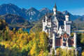
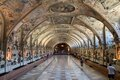
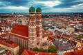
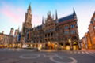
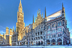
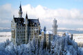
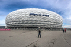
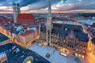

Multimédia
Nesta área encontra contéudos multimédia!!!
Fotografias








Video-Munique
Poesia
Entre rios e montes a brilhar,
Munique sabe encantar,
torres góticas erguem-se ao céu,
história e futuro num mesmo véu.
Na Marienplatz ecoa a canção,
do Glockenspiel, pura tradição.
E no outono, em festa e alegria,
a Oktoberfest enche o dia.
Munique-Alemanha